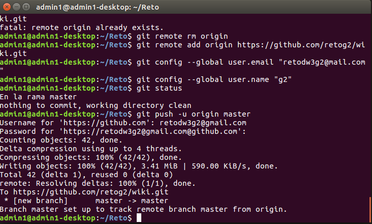
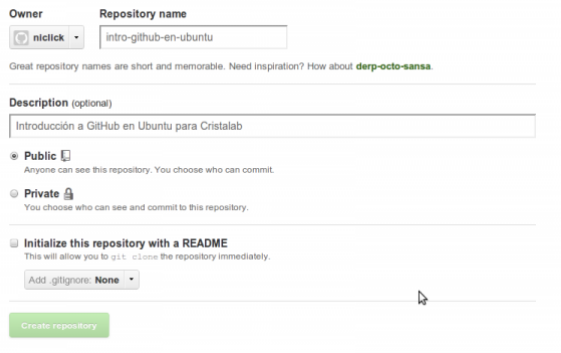

Git y Git-Hub
¿Qué es Git?
Git es un sistema de control de versiones diseñado por Linus Torvalds, pensando en la eficiencia y la confiabilidad del mantenimiento de versiones de aplicaciones cuando éstas tienen un gran número de archivos de código fuente.
¿Qué es control de versiones?
El control de versiones es la gestión de los diversos cambios que se realizan sobre algún archivo, en este caso, código.
¿Qué es GitHub?
Es un sistema de control de versiones basado en Git, tiene una comunidad muy activa y aloja algunos proyectos muy interesantes como el Bootstrap de Twitter, el HTML5 Boilerplate, jQuery, entre muchos otros.
GitHub en Ubuntu
Debido a que no tenemos un cliente gráfico como en Windows o en Mac, deberemos proceder desde la consola.
Instalación y configuración
Instalación
Lo primero que tenemos que hacer es instalar Git, para eso abrimos la consola y tecleamos:
sudo apt-get install git-hubConfiguración
Después configuraremos nuestros datos (usaré los míos):
git config --global user.name "carlos" git config --global user.email "me@carlosandresviteri.com"
Creación de un repositorio
Para crear un repositorio deberemos dirigirnos a New Repository , completar los datos que nos pide y darle clic a Create Repository:
Subida de archivos
Para subir archivos desde nuestro ordenador primero iniciamos el git. Ejecutamos el siguiente comando:
git initPara añadir archivos, si queremos por ejemplo añadir todos los archivos de la carpeta, tecleamos el siguiente comando:
git addPero si queremos añadir un archivo específico sería:
git add nombre-del-archivo.extensiónTODOS los cambios que hagamos requieren un comentario, para ello tecleamos:
git commit -m '1consolidacion'Para eliminar los cambios realizados que aún no se hayan hecho commit tecleamos:
git reset --hard HEADPara conectarnos al repositorio tecleamos -nótese mi nombre de usuario y el nombre del repositorio-:
git remote add origin git@github.com: niclick/intro-github-en-ubuntu.gitSi nos sale este error:
fatal: remote origin already existsLa solución es teclear, y repetir el paso anterior:
git remote rm originY lo subimos:
git push -u origin masterPara registrar las consolidaciones tecleamos:
git logMostrar estado actual
Para mostrar el estado actual de la rama, como los cambios que hay sin commitear tecleamos:
git statusActualizar repositorios
Para actualizar los repositorios al commit más nuevo tecleamos:
git pullEliminar un archivo
Para eliminar un archivo debemos teclear:
git rm nombre-del-archivo.extensiónY para que el cambio se refleje en GitHub, deberemos hacer el mismo proceso que el de subida.
Clonar un Repositorio
Para clonar el repositorio podemos hacerlo mediante la consola. Le damos clic en Git Read-Only y copiamos el contenido:
Luego vamos a la consola y tecleamos git clone más lo que copiamos anteriormente:
git clone git://github.com/niclick/intro-github-en-ubuntu.gitY tendremos listo nuestro repositorio clonado de forma local.